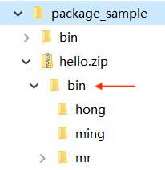

classpath and jar
In Java, we often hear about classpath. There are a lot of articles on the web about how to set the classpath, but most of the settings are not reliable.
What exactly is classpath?
classpath is an environment variable used by the JVM to instruct the JVM how to search for class.
Because Java is a compiled language, the source code file is .java, and the compiled .class file is the actual bytecode that can be executed by the JVM. Therefore, the JVM needs to know where to search for the corresponding Hello.class file if it wants to load an abc.xyz.Hello class.
So, classpath is a collection of directories that sets a search path related to the operating system. For example, on Windows, directories separated by ; and with spaces enclosed in "" might look like this:
C:\work\project1\bin;C:\shared;"D:\My Documents\project1\bin"
On a Linux system, separated by :, it might look like this:
/usr/shared:/usr/local/bin:/home/liaoxuefeng/bin
Now let's assume that the classpath is . ;C:\work\project1\bin;C:\shared, and when the JVM loads the class abc.xyz.Hello, it looks for it in turn:
\abc\xyz\Hello.class - C:\work\project1\bin\abc\xyz\Hello.class
- C:\shared\abc\xyz\Hello.class
Notice that . represents the current directory. If the JVM finds the corresponding class file under a certain path, it doesn't search further back. If it doesn't find it in any of the paths, it reports an error.
There are two ways to set classpath:
Setting the classpath environment variable in the system environment variable is not recommended;
Setting the classpath variable when starting the JVM is recommended.
We strongly don't recommend setting classpath in the system environment variable, as that will pollute the entire system environment. Setting the classpath when starting the JVM is the recommended practice. This actually means passing the -classpath parameter to the java command:
java -classpath .;C:\work\project1\bin;C:\shared abc.xyz.Hello
Or use the -cp shorthand:
java -cp .;C:\work\project1\bin;C:\shared abc.xyz.Hello
No system environment variables are set and no -cp parameter is passed in, then the JVM default classpath is ., which is the current directory:
java abc.xyz.Hello
The above command tells the JVM to search for Hello.class only in the current directory.
To run a Java program in the IDE, the -cp parameter automatically passed in by the IDE is the bin directory of the current project and the introduced jar package.
Often, in classs we write ourselves, we refer to classs from the core Java library, e.g. String, ArrayList, etc. Where should we find these classs?
There are a lot of "how to set classpath" articles that will tell you to put the JVM's own rt.jar into the classpath, but in fact, there's no need to tell the JVM how to look for the class in the core Java libraries, and how can the JVM be so stupid as to not know where its own core libraries are! How can the JVM be so stupid that it doesn't even know where its core libraries are?
```alert type=warning title=注意 不要把任何Java核心库添加到classpath中！JVM根本不依赖classpath加载核心库！
Better yet, don't set `classpath`! The default current directory `. ` is sufficient for the vast majority of cases.
Assuming we have a compiled `Hello.class` with package name `com.example` and current directory `C:\work`, the directory structure must be as follows:
```ascii
C:\work
└─ com
└─ example
└─ Hello.class
To run this Hello.class you must use the following command in the current directory:
C:\work> java -cp . com.example.Hello
The JVM looks for com.example.Hello in the current directory based on the classpath setting of . in the current directory for com.example.Hello, i.e. the actual search file must be located in com/example/Hello.class. If the specified .class file does not exist, or if the directory structure and package name do not match, an error will be reported.
jar package
Having a lot of .class files scattered in various levels of directories is certainly not easy to manage. It would be much easier if the directories could be packaged into a single file.
The jar package is used to do this, and it takes the directory hierarchy of the package organization, as well as all the files in each directory (including .class files and others) and breaks them into a single jar file, which makes it much simpler to either back up or send to a client.
A jar package is actually a compressed file in zip format, and a jar package is equivalent to a directory. If we want to execute the class of a jar package, we can put the jar package in the classpath:
java -cp ./hello.jar abc.xyz.Hello
This way the JVM will automatically go searching for a class in the hello.jar file.
So here's the question: how do you create jar packages?
Because the jar package is a zip package, so, directly in Explorer, find the correct directory, right-click, in the pop-up shortcut menu, select "Send to", "zipped" folder "to make a zip file. Then, change the extension from .zip to .jar and a jar package is created.
Suppose the directory structure of the compiled output looks like this:
package_sample
└─ bin
├─ hong
│ └─ Person.class
│ ming
│ └─ Person.class
└─ mr
└─ jun
└─ Arrays.class
The first directory in the jar package should not be bin, but hong, ming, mr. If you look at it in Windows Explorer, it should look like this:

If it looks like this:

The hello.zip above contains the bin directory, which means that the packaging was typed incorrectly, and the JVM still can't look up the correct class from the jar package, because the hong.Person must be stored as hong/Person.class, not bin/hong/Person.class.
The jar package can also contain a special /META-INF/MANIFEST.MF file. MANIFEST.MF is plain text and can be specified with Main-Class and other information. the JVM automatically reads this MANIFEST.MF file, and if the Main-Class is present, we don't have to specify the name of the startup class on the If Main-Class exists, we don't have to specify the startup class name on the command line, but use a more convenient command:
java -jar hello.jar
In large projects, it is not possible to manually write MANIFEST.MF files and then manually create jar packages. the Java community provides a large number of open source build tools, such as [Maven] (... /... /... /maven/index.html), which can create jar packages very easily.
Summary
The JVM determines the path and order in which it searches for class through the environment variable classpath;
It is strongly recommended not to set the **system environment variable classpath and it is recommended to always pass it in via the -cp command;
A jar package is essentially a zip format, the equivalent of a directory, and can contain many .class files for easy downloading and use;
The MANIFEST.MF file can provide information about the jar package, such as Main-Class, so that the jar package can be run directly.